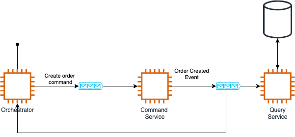

Event sourcing and CQRS
@ignacio_suay
Event sourcing
Is an architectural pattern where every change in an application is captured as an event. Event sourcing persists the state of a business entity as a sequence of state-changing events.

CQRS
CQRS stands for Command Query Responsibility Segregation where you separate update operations from read operations to a data store.

Benefits
- Audit: Every single action in your application is recorded
- Reproducibility: You can reproduce the state of your application by replaying the events
- Historic State: For any given point in time you will be able to query the state of your application.
- Scalability: You can scale write and read operations independently.
- Enforce recording every event: Not missing events when updating your model.
Use case
- The orchestrator receives Http request and sends a command
- The command service validates the request and sends an event
- The event service stores the event into a db (materialized view) and handles read-only queries
- Kafka is the source of truth
Complexity
- Code duplication and more code to maintain
- Handle failures
- Increase level of testing
- Eventually consistency
- External systems
- Team
Versioning
- Hard to maintain a system that is able to process events stored years ago
- You can use a schema registry for storing a history version of your event schemas
- If an event is not backward compatible then it is a new event.
- Migrating old events into new events is hard and time consuming.
Money
Java + Spring love memory
Summary
- Event sourcing and CQRS are very useful patterns and like any other pattern they won't apply for all cases.
- Event sourcing has great advantages and should be considered when working specially with financial data
- CQRS has good benefits but it could ve a big impact in your productivity and budget